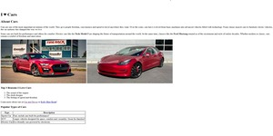
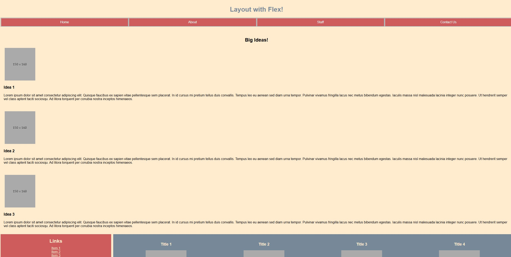
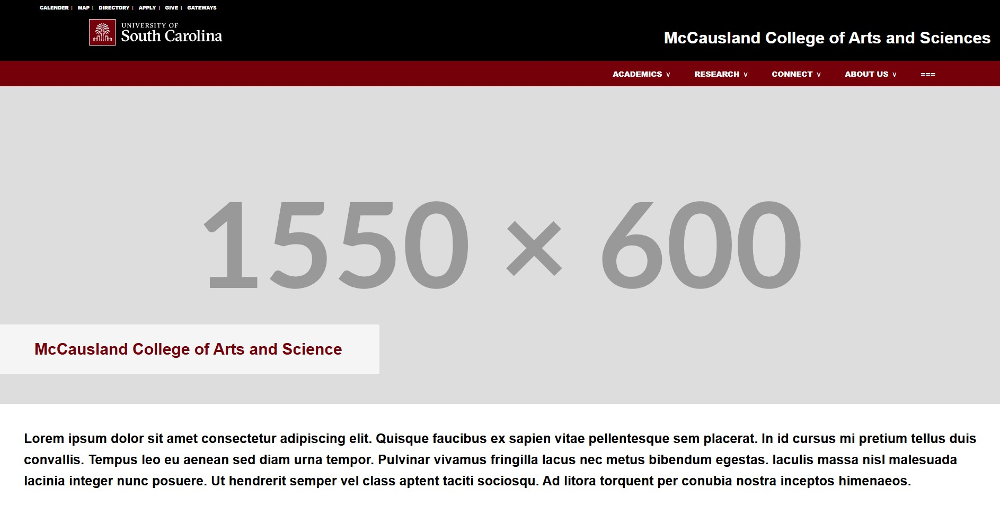
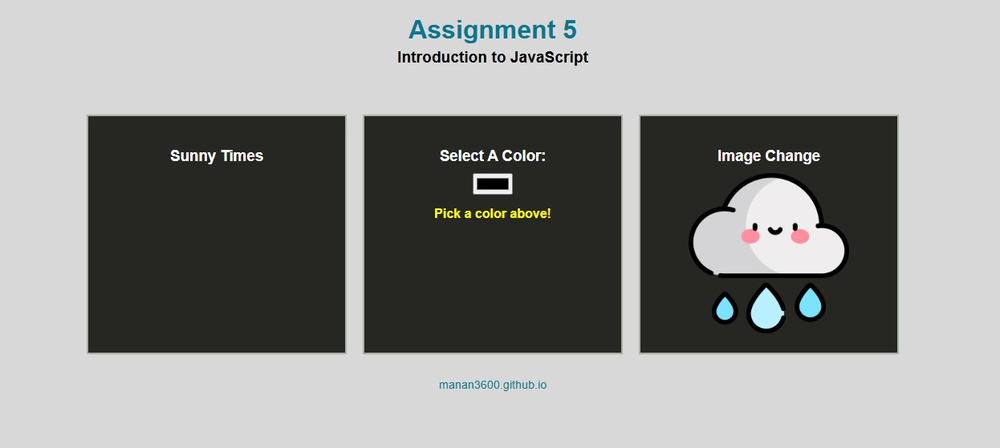
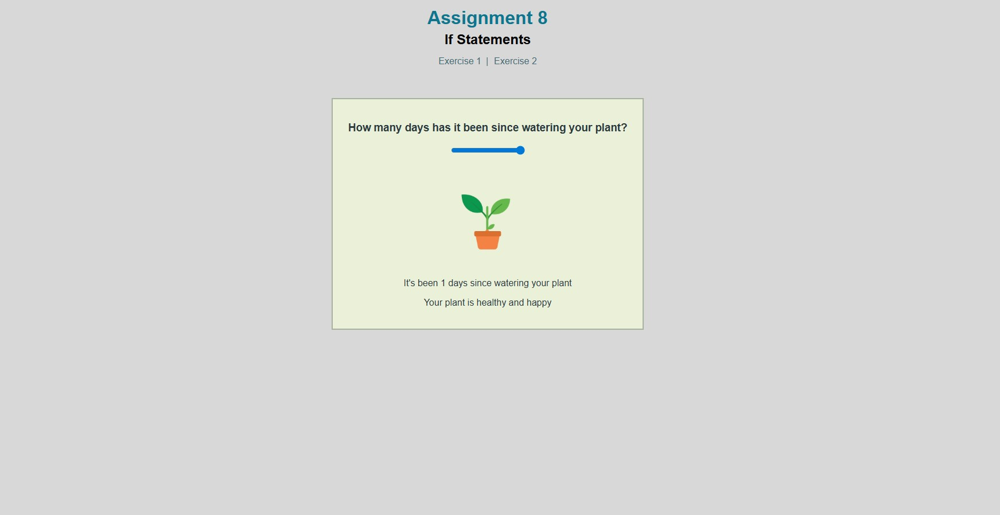
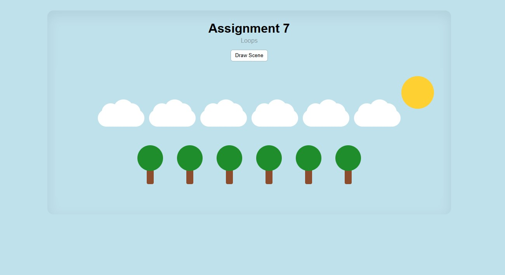
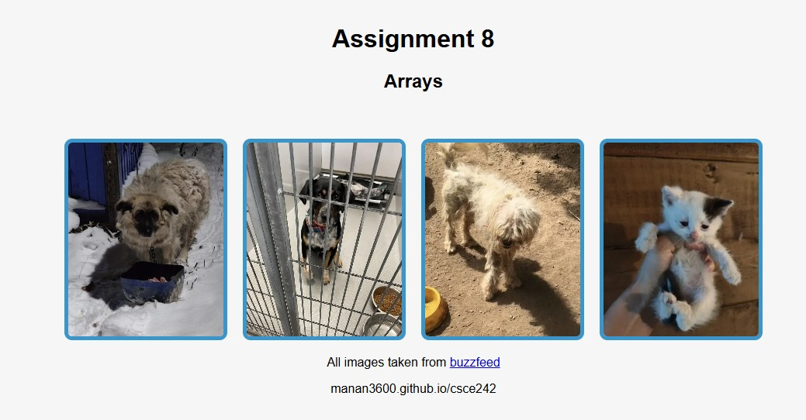
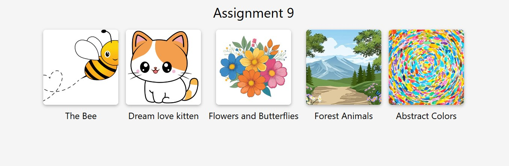
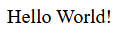

CSCE 242: Manan Patel
Assignments
Assignment 1 – Basic HTML
Basic page with headings, paragraphs, images, lists, and a table.
Assignment 2 – Basic CSS
Applied CSS to style a webpage with a color theme, borders, and background.
Assignment 3 – Page Layout
Responsive layout with Flexbox and a media query for smaller screens.
Assignment 4 – Recreate CSS
The goal of this assignment was to use knowledge of CSS & HTML to recreate an existing website as accurate as possible.
Assignment 5 – Intro to JavaScript
The goal of this assignment was to apply basic Javascript functions/elements.
Assignment 6 – Conditionals
This assignment utlizes if-statements in Javascript, and other HTML/CSS/JavaScript features to create two distinct activities that the user can do.
Assignment 7 – Loops
This assignment uses for-loops in JavaScript to draw clouds, trees, and a sun or moon depending on the time of day.
Assignment 8 – Arrays
Using JavaScript Arrays, this assignment creates a group of interactive images, which the user can click to see certain prompted messages.
Assignment 9 – Classes
Using Classes, this webpage has different interactive modal boxes for different species of birds, which the user can click to see more information on the birds, created through an array of classes.
Setup 2 – Node
https://github.com/manan3600/node-helloworld
https://node-helloworld-ytwm.onrender.com/
In this course, students will utilize HTML and CSS to design the front end of a website.Then they will use JavaScript to add functionality. Finally, they will learn to use Node.js and server-side JavaScript to store and retrieve data from a server.